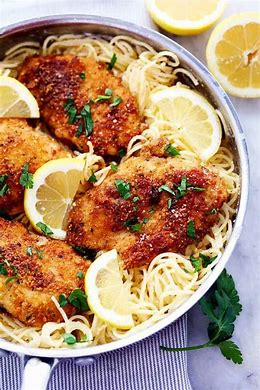
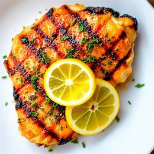
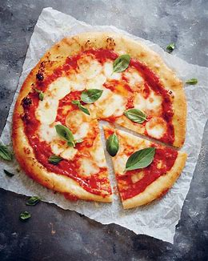
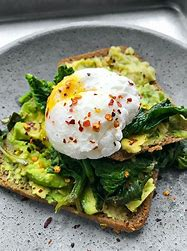
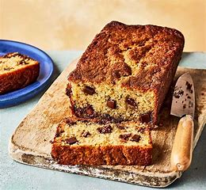
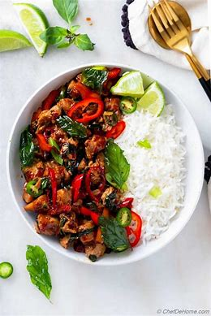
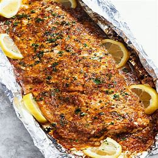
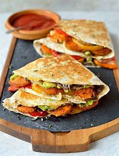
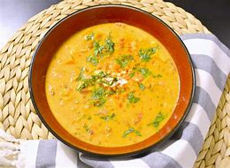
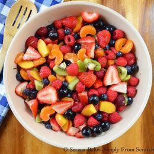

My Recipes
Creamy Garlic Parmesan Pasta

Description:
A quick and rich pasta dish made with a creamy
garlic parmesan sauce, perfect for weeknight dinners
Ingredients:
- 200g spaghetti
- 1 cup heavy cream
- 1/2 cup grated parmesan cheese
- 4 garlic cloves, minced
- 1 tbsp olive oil
- Salt & pepper to taste
Grilled Lemon Herb Chicken

Description:
Juicy chicken breasts marinated in lemon juice and
fresh herbs, grilled to perfection.
Ingredients:
- 4 chicken breasts
- 2 tbsp olive oil
- 2 lemons (juice and zest)
- 3 garlic cloves, minced
- Fresh rosemary and thyme, chopped
- Salt & pepper to taste
Classic Margherita Pizza

Description:
A simple yet delicious pizza with fresh mozzarella,
basil, and tomatoes on a crispy thin crust.
Ingredients:
- 1 pizza dough
- 1/2 cup tomato sauce
- 200g fresh mozzarella cheese
- Fresh basil leaves
- 1 tbsp olive oil
- Salt & pepper to taste
Avocado Toast with Poached Egg

Description:
A quick and healthy breakfast option with creamy
avocado spread and a perfectly poached egg on
sourdough toast.
Ingredients:
- 2 slices sourdough bread
- 1 ripe avocado
- 1 tbsp lemon juice
- 2 eggs
- Salt & pepper to taste
- Chili flakes (optional)
Chocolate Chip Banana Bread

Description:
Moist banana bread with melty chocolate chips, ideal
for breakfast or a sweet snack.
Ingredients:
- 3 ripe bananas
- 1/2 cup melted butter
- 1 cup sugar
- 1 1/2 cups all-purpose flour
- 1 tsp baking soda
- 1 cup chocolate chips
Spicy Thai Basil Stir-fry

Description:
A flavorful Thai dish with stir-fried vegetables,
basil, and your choice of protein, served over rice.
Ingredients:
- 300g chicken or tofu
- 1 cup bell peppers, sliced
- 1/2 cup onion, sliced
- 2 tbsp soy sauce
- 2 tbsp oyster sauce
- 1 bunch fresh Thai basil leaves
- 1 red chili, chopped
Baked Salmon with Honey Garlic Glaze

Description:
Tender baked salmon with a sweet and savory honey
garlic glaze, served with roasted vegetables.
Ingredients:
- 4 salmon fillets
- 3 tbsp honey
- 2 tbsp soy sauce
- 3 garlic cloves, minced
- 1 tbsp olive oil
- Salt & pepper to taste
Loaded Veggie Quesadillas

Description:
Crispy tortillas stuffed with cheese, black beans,
and a variety of fresh vegetables, served with
salsa.
Ingredients:
- 4 large tortillas
- 1 cup shredded cheddar cheese
- 1/2 cup black beans
- 1/2 cup bell peppers, chopped
- 1/2 cup corn kernels
- 2 tbsp sour cream (for garnish)
Coconut Curry Lentil Soup

Description:
A warm and comforting lentil soup made with creamy
coconut milk and fragrant curry spices.
Ingredients:
- 1 cup red lentils
- 1 can coconut milk
- 1 tbsp curry powder
- 1 onion, diced
- 3 garlic cloves, minced
- 4 cups vegetable broth
Summer Berry Salad with Honey Vinaigrette

Description:
A fresh and colorful salad with mixed greens, juicy
berries, and a light honey vinaigrette dressing.
Ingredients:
- 4 cups mixed greens
- 1/2 cup strawberries, sliced
- 1/2 cup blueberries
- 1/4 cup crumbled feta cheese
- 2 tbsp honey
- 1 tbsp balsamic vinegar